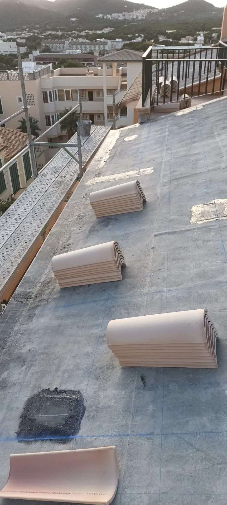
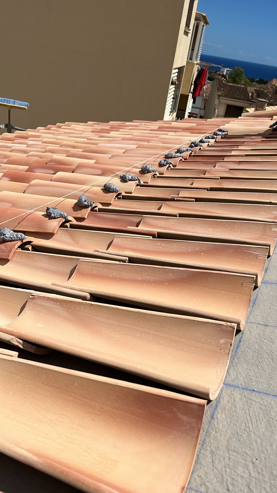
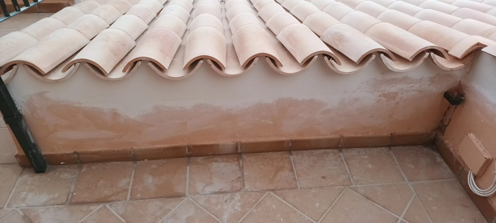
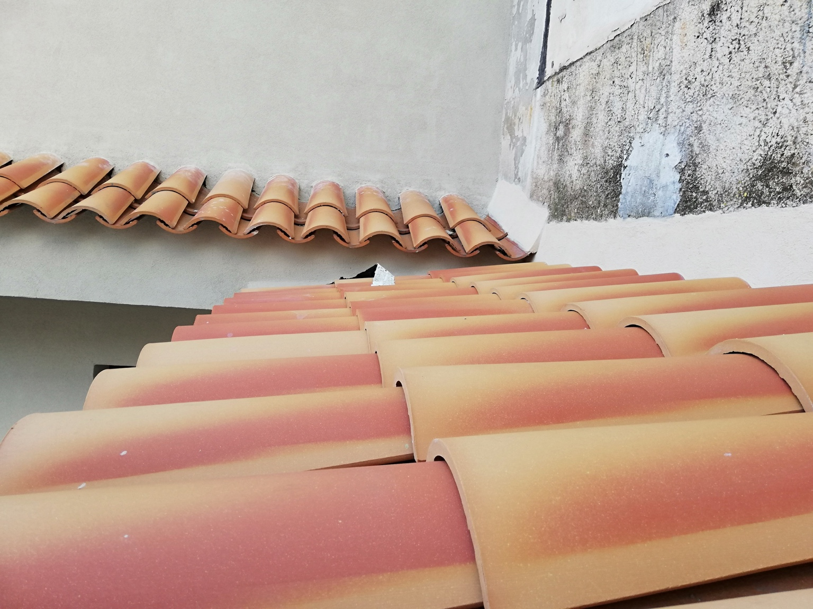

Cubiertas · Mallorca · Obra real
Cubiertas y tejados.
Rehabilitación de cubiertas con teja cerámica, impermeabilización, sustitución de piezas deterioradas y ejecución de remates para garantizar estanqueidad y durabilidad.
← Volver a proyectos
Ejecución real
La cubierta se resuelve por capas, encuentros y remates.
El acabado visible es solo la última fase. Antes controlamos soporte, pendientes, impermeabilización, replanteo, alineación, fijaciones y puntos singulares.




Construcción y reforma en Mallorca